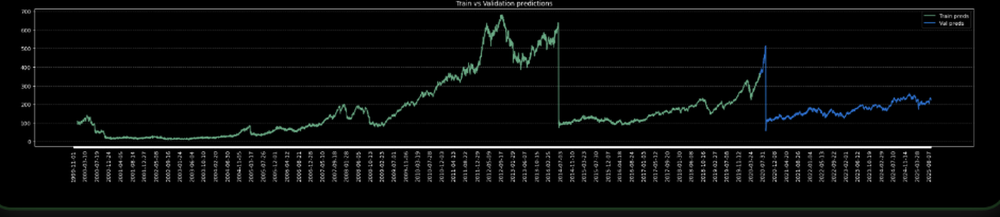
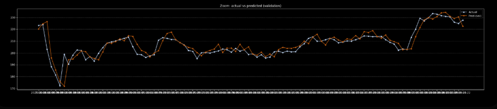
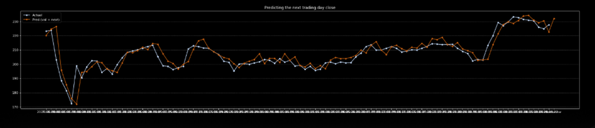
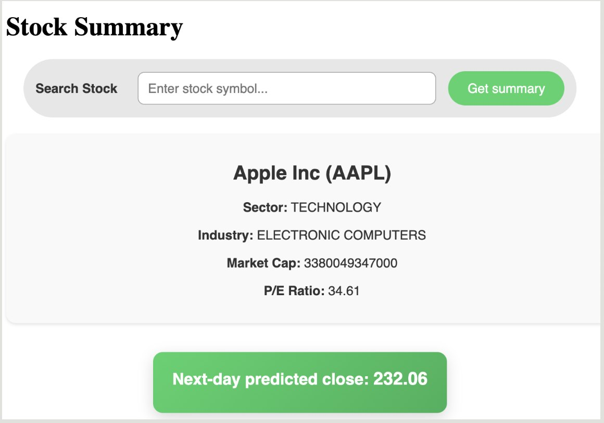

Personal project · Full-stack ML
A two-layer LSTM trained on six decades of daily closes, wrapped in a Flask app that takes a ticker, trains or loads a model, renders the diagnostic plots, and returns a next-day close — end to end, in the browser.
Most forecasting projects stop at a notebook cell containing a validation curve. This one goes the rest of the way: ingest, preprocess, train, serve, and render — reachable by typing a ticker into a search box.
Historical daily data is pulled from Alpha Vantage, normalised, cut into overlapping fixed-length windows, and fed to a multi-layer LSTM in PyTorch. Flask serves the model alongside the company summary and the generated plots, with Matplotlib figures written to disk and injected into a Jinja2 template.
The deliberate constraint was scope: two layers, 32 hidden units, one input feature. A financial series has a low signal-to-noise ratio and roughly 15,000 usable daily observations, which is not much data for a deep network. A bigger model would fit the training split beautifully and learn nothing transferable.
What the project actually demonstrates is the shape of an ML system — configuration separated from logic, preprocessing separated from modelling, inference separated from presentation — rather than a competitive forecast.
All of this lives in models/utils.py, with every hyperparameter hoisted into a
single config dictionary in models/config.py so nothing is tuned by editing logic.
outputsize: full, taking the adjusted close series so splits and dividends don't appear as artificial price jumps.Normalizer class fits mean and standard deviation and stores them, so predictions can be inverse-transformed back to real prices. Statistics are fit once and reused — never recomputed per split.TimeSeriesDataset wraps the windows for PyTorch DataLoader consumption at batch size 64.static/plots/ during training, which is how diagnostics reach the browser without a JS charting layer.An LSTM carries a cell state across timesteps with learned input, forget and output gates, which is why it holds information across a 20-step window where a plain RNN's gradients would have vanished.
Dropout at 0.2 sits between the recurrent layers. Adam handles optimisation with a scheduled learning-rate decay — starting at 0.01 to move quickly through the early epochs, then decaying so the later ones settle rather than bounce around the minimum.
Training and evaluation share a single run_epoch function with a train/eval
flag, so the two paths can't silently diverge. predict_next handles
single-step inference: take the most recent window, forward pass, inverse-transform
back to a price.
| Parameter | Value |
|---|---|
| Input size | 1 |
| LSTM layers | 2 |
| Hidden units | 32 |
| Dropout | 0.2 |
| Batch size | 64 |
| Epochs | 100 |
| Learning rate | 0.01 + decay |
| Optimiser | Adam |
# models/lstm_model.py — shared train/eval step def run_epoch(dataloader, is_training=False): epoch_loss = 0 model.train() if is_training else model.eval() for x, y in dataloader: if is_training: optimizer.zero_grad() out = model(x.to(device)) loss = criterion(out.contiguous(), y.to(device)) if is_training: loss.backward() optimizer.step() epoch_loss += loss.detach().item() / x.shape[0] return epoch_loss, scheduler.get_last_lr()[0]
The model sees close price only. Volume, volatility and cross-asset signals would all add information, but each extra feature also adds parameters, and with a single asset's history the model overfits before it generalises. Starting univariate keeps the baseline honest — anything added later has to beat it.
Every training run writes its own diagnostics. They're generated server-side and surfaced in the app rather than living in a notebook.



Train vs Validation shows the fitted series against the held-out period, confirming the model tracks the broad trend rather than diverging. Zoomed Validation narrows to a few months so the day-to-day alignment is actually visible — at full scale, a decade of prices compresses any error into invisibility.
Next-Day Prediction is the one the app surfaces to the user, rolling one step ahead across the validation window.
A next-day price predictor that visually hugs the actual line is not, by itself, evidence of skill. Yesterday's close is already a strong predictor of today's, so a model that learns to output something close to its last input will produce a chart that looks like this one.
The test that separates the two is comparing against a persistence baseline — predict today's close as yesterday's — and measuring directional accuracy rather than RMSE on levels. That comparison is the next thing I'd add, and I'd rather name the gap than let the plot imply more than it shows.
| Route | Does |
|---|---|
| GET / | Search page with the ticker input |
| GET /summary/<ticker> | Trains or loads the model, regenerates plots, renders the template |
| GET /auto_complete | Ticker symbol suggestions as you type |
The summary route is the interesting one, because it carries the whole pipeline behind a
single URL: fetch, normalise, window, train or restore lstm_model.pt, predict,
plot, render. Company metadata — sector, industry, market cap, P/E — comes back from the
same Alpha Vantage account and sits above the prediction so the number has context.
Figures reach the page as static PNGs referenced from the Jinja2 template, which keeps the frontend dependency-free at the cost of regenerating images per request.

Baseline comparison first. Persistence baseline plus directional accuracy, so the model has a number to beat rather than a plot to resemble.
Walk-forward validation. A single chronological split gives one estimate from one market regime. Rolling the split forward across multiple windows shows whether performance is stable or an artefact of where the cut landed.
Decouple training from serving. Right now a request can trigger a training run, which is fine for a demo and wrong for anything else. Persisted per-ticker artefacts and a cache would separate the two lifecycles.
More features, carefully. Volume and realised volatility are the obvious additions — each one earning its place against the univariate baseline rather than being added on principle.